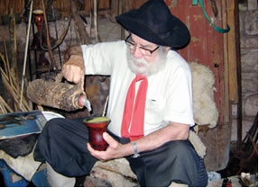
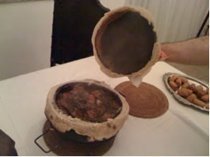
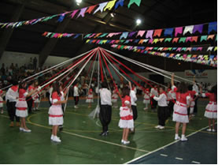

O gaúcho, que não dispensa a bombacha, o lenço e o poncho, aprecia o chimarrão e o churrasco.

chimarrão, tradição gaúcha
Grande parte das danças gaúchas é de origem portuguesa, se destaca também as danças espanholas, como a tirana e o anu.
A festa de Nossa Senhora dos Navegantes, de origem portuguesa, é realizada em Porto Alegre no dia 2 de fevereiro, no rio Guaíba, onde centenas de barcos e milhares de fiéis devotos participam da procissão fluvial.
É também chamada pelo povo de festa das Melancias. Algumas cidades do Sul ainda celebram as tradições dos antepassados em festas típicas, como a Festa da Uva, em Caxias do Sul (RS).
Os migrantes chegaram a partir de 1850: alemães, italianos, poloneses, ucranianos, holandeses, etc. Eles influenciaram fortemente a cultura da região. Além dos colonizadores portugueses, que deixaram sua marca nos usos e costumes e no linguajar cantado dos paranaenses.
No Paraná, a culinária inclui o barreado, um cozido de carne. É um prato caboclo típico do litoral. Ele é preparado com carne bovina, toucinho e temperos colocados em uma panela de barro. Ela é enterrada e acende-se por cima uma fogueira. Após 12 horas de cozimento, a iguaria está pronta.

Barreado
Os imigrantes se adaptaram facilmente ao clima subtropical da região e muito contribuíram na cultura vinhateira, na triticultura (cultura com trigo), linho, algodão, cânhamo e mandioca.
Alguns eventos culturais são marcantes, e mobilizam várias pessoas. O boi-de-mamão, por exemplo, vai do Natal ao Carnaval. Começa com as prendas e pedidos de ajuda e termina com a morte e ressurreição do boi.
A dança de fitas é uma tradição milenar. É uma dança ariana antiquíssima. É feito um pau de fita, cujo mastro é sustentado no centro da dança por um menino. Da ponta do mastro saem pares de fita. Executam as figurações segurando a ponta das suas fitas, dançando, traçando as fitas em torno do mastro central.

Dança de fitas
Em Santa Catarina o boi na vara ainda é praticado. É uma espécie de tourada praticada. O boi, preso numa vara com uma corda, investe num boneco; até o esgotamento. Outras vezes soltam os animais e os homens saem correndo, derrubam o boi e despedaçam-no.
Outro evento cultural no estado é a Oktoberfest, em Blumenau (SC), tradicional festa da cerveja.
A culinária é marcada pelo pirão de peixe, no sul do Estado; e os pratos alemães e a marreca, no norte. Na capital, o destaque é o camarão.